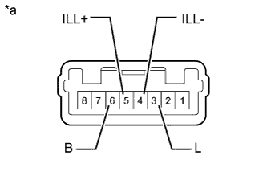

FUEL LID OPENER SWITCH > INSPECTION |
| 1. INSPECT FUEL LID OPENER SWITCH |
|  |
Measure the resistance according to the value(s) in the table below.
| Tester Connection | Switch Condition | Specified Condition |
| 6 (B) - 3 (L) | Pushed (ON) | Below 1 Ω |
| Not pushed (OFF) | 10 kΩ or higher |
Inspect the switch illumination.
Apply battery voltage between the terminals of the light, and check the operation of the light.
| Measurement Condition | Specified Condition |
| Battery positive (+) → Terminal 5 (ILL+) Battery negative (-) → Terminal 4 (ILL-) | Light comes on |
| *a | Component without harness connected (Fuel Lid Opener Switch) |